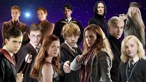

Ronald Bilius Weasley, más conocido como Ron Weasley, es uno de los principales personajes de la saga Harry Potter. Es el mejor amigo del protagonista y de Hermione Granger. Creado por la británica J. K. Rowling, Ron apareció por primera vez en Harry Potter y la piedra filosofal (1997), y es descrito como un chico pelirrojo alto y delgado, con manos y pies grandes y una cara cubierta de pecas. Tiene, además, ojos azules y una larga nariz. En la gran pantalla ha sido interpretado, a lo largo de diez años.
Es un personaje que se caracteriza por ser fiel, honrado, astuto, prudente, divertido, celoso, bromista, rebelde, sarcástico, algo cascarrabias… pero ante todo amigo de sus amigos. Le encanta el ajedrez, el Quidditch, las bromas y estar con Harry y Hermione. Detesta las arañas, a algunos Slytherin (por ejemplo Draco Malfoy), la ropa de segunda mano que tiene que ponerse y que Hermione le corrija.
Se le da bien el ajedrez mágico y la estrategia, cuidar de los demás (aunque a veces sobreprotege a Ginny), imitar voces y acentos y volar en escoba. En situaciones de tensión mantiene la calma y demuestra rápidos reflejos, así como capacidad para el pensamiento lateral. Peca de celoso y es muy inseguro debido a los méritos acumulados por sus hermanos y la pobreza de su familia.
Ron es muy optimista y hasta cierto punto despreocupado, aunque a veces le cuesta sobrellevar el hecho de que su familia no tenga mucho dinero. Esto hace que muchas de sus cosas estén usadas y viejas, ya que las hereda de sus hermanos mayores, y que algunos alumnos de Hogwarts lo desprecien por ello, en especial Draco Malfoy y los de Slytherin.
 |
 |
 |
 |